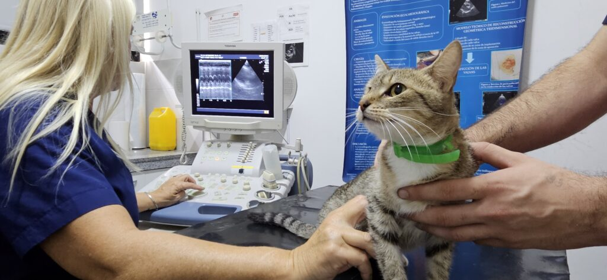

Nuestra Historia
Conocé los momentos más importantes de nuestra fundación y cómo seguimos creciendo cada año.

2023 - Fundación de Ayudando Patitas
Nació nuestra fundación con el objetivo de rescatar, cuidar y reubicar animales en situación de calle.

2024 - Primer Refugio Oficial
Se inauguró nuestro primer refugio en San Juan. Más de 60 animales encontraron un hogar temporal seguro.

2024 - Campañas de Adopción
Iniciamos campañas mensuales de adopción, logrando más de 200 adopciones responsables en todo el año.

2025 - Jornadas de Vacunación y Castración
Llevamos jornadas gratuitas de vacunación y castración a diferentes barrios de la provincia.